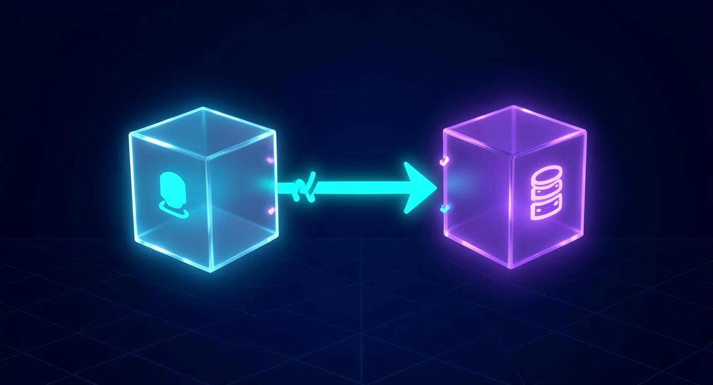
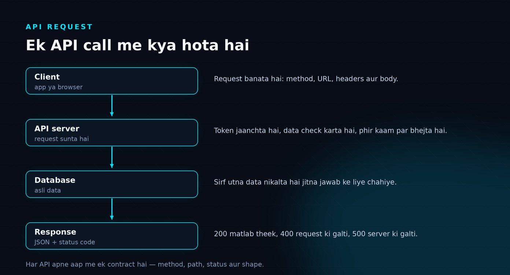
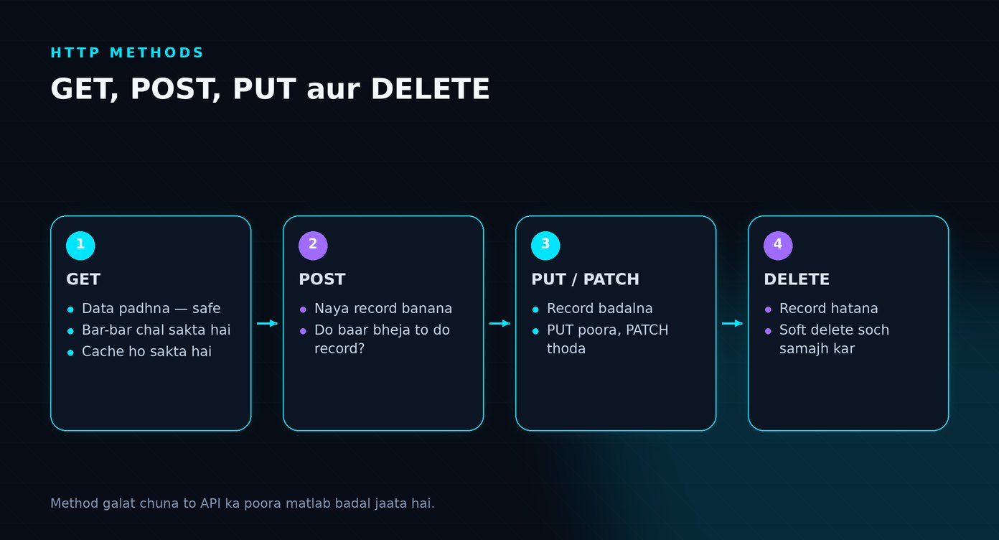

API Kya Hai? REST, JSON aur Pehla API Call Aasan Bhasha Me

जब आप किसी app में मौसम देखते हैं, UPI से पैसे भेजते हैं या किसी website पर Google से login करते हैं, तो पीछे दो software आपस में बात कर रहे होते हैं। उस बातचीत का रास्ता, नियम और भाषा — इन तीनों को मिलाकर API कहते हैं। API का पूरा नाम Application Programming Interface है, पर नाम से ज़्यादा ज़रूरी यह समझना है कि यह एक contract है: "मुझसे इस तरीके से माँगो, मैं तुम्हें इस shape में जवाब दूँगा।"
इस guide में मैं API को बिल्कुल शुरुआत से खोलूँगा — एक request के चार हिस्से, REST और HTTP methods, JSON का format, आपका पहला API call, authentication का फर्क, status codes की table, और वे छह गलतियाँ जो नए developers सबसे ज़्यादा करते हैं। अगर आप frontend या backend में नए हैं, तो यह पोस्ट आपके लिए है।
छोटा जवाब: API दो programs के बीच बात करने का तय किया हुआ तरीका है। Client एक request भेजता है — method, URL, headers और ज़रूरत हो तो body. Server जाँचता है कि आपको अनुमति है या नहीं, काम करता है, और एक response लौटाता है जिसमें status code और data (आमतौर पर JSON) होता है। REST एक style है जिसमें हर चीज़ को "resource" मानकर उस पर GET, POST, PUT और DELETE चलाया जाता है।
API kya hai — एक आसान तुलना
रेस्टोरेंट की तुलना सबसे ज़्यादा समझ आती है। आप रसोई में जाकर खुद खाना नहीं बनाते; आप waiter को order देते हैं। Waiter menu जानता है, रसोई से बात करता है, और आपको plate लाकर देता है। आपको रसोई का पूरा हिसाब नहीं पता, और आपको पता होना भी नहीं चाहिए।
यहाँ menu API है — यह बताता है कि क्या-क्या माँगा जा सकता है। Order आपकी request है, और plate response. अगर आप menu में नहीं है वह माँगेंगे, तो जवाब मिलेगा "यह नहीं है" — यही 404 है। अगर waiter को लगे कि आपने गलत तरीके से order दिया, तो 400. और अगर रसोई में आग लग जाए, तो 500.
इस तुलना से एक ज़रूरी बात निकलती है: API आपको अंदर का पूरा सिस्टम नहीं दिखाता, सिर्फ़ वह सतह दिखाता है जिससे बात की जा सके। इसीलिए कोई company अपना database बदल सकती है बिना अपनी mobile app को तोड़े — बशर्ते API का contract वही रहे।
एक API call के चार हिस्से

1. Method: क्या करना है — पढ़ना, बनाना, बदलना या हटाना।
2. URL: किस चीज़ पर करना है। जैसे /users/42/orders का मतलब है user 42 के orders. URL में जो हिस्सा बदलता है उसे path parameter कहते हैं।
3. Headers: request के बारे में जानकारी — मैं कौन हूँ (token), मुझे किस shape में जवाब चाहिए, और मैंने क्या भेजा है।
4. Body: असली data, जो POST या PUT के साथ जाता है। GET में आमतौर पर body नहीं होती।
REST aur HTTP methods

REST कोई library नहीं, एक तरीका है। उसमें हर चीज़ एक "resource" होती है — user, order, product, invoice — और उस resource पर चार बुनियादी काम होते हैं।
| Method | काम | उदाहरण |
|---|---|---|
| GET | पढ़ना | GET /products?limit=20 |
| POST | नया बनाना | POST /orders |
| PUT | पूरा बदलना | PUT /users/42 |
| PATCH | थोड़ा बदलना | PATCH /users/42 |
| DELETE | हटाना | DELETE /users/42 |
दो बातें ध्यान रखें। पहला — GET को कभी data नहीं बदलना चाहिए। अगर कोई GET request चलाने से database में कुछ बदल जाए, तो browser, cache और crawler सब भ्रम में पड़ जाएँगे। दूसरा — POST को दो बार भेजने पर दो records बन सकते हैं। इसलिए payment जैसे कामों में idempotency key भेजी जाती है, ताकि दोबारा आई request को server पहचान ले और दूसरी बार पैसा न काटे।
JSON kya hai
JSON data का एक सादा format है — curly braces में key और value. यह पढ़ने में आसान है और लगभग हर language इसे सीधे समझ लेती है। नीचे एक order का response है।
{
"id": 1042,
"status": "shipped",
"total": 1299.00,
"customer": { "id": 42, "name": "Amit" },
"items": [
{ "sku": "KB-01", "qty": 1 },
{ "sku": "MS-07", "qty": 2 }
]
}यहाँ तीन चीज़ें देखें: numbers बिना quotes के हैं, text quotes में, और list square brackets में। जब API का जवाब बदले, तो पुराने clients न टूटें — इसके लिए एक नियम बनाएँ: नई fields जोड़ना ठीक है, पर मौजूदा field का नाम या type बदलना versioning के बिना नहीं।
आपका पहला API call
किसी public API से शुरुआत करें जिसे key न चाहिए, जैसे मौसम या देशों की जानकारी देने वाली कोई खुली service. Terminal में एक GET request ऐसे भेजी जाती है:
curl -s "https://api.example.com/v1/countries?limit=3" \
-H "Accept: application/json"जवाब कुछ ऐसा आएगा:
[{"code":"IN","name":"India"},{"code":"JP","name":"Japan"}]अब वही काम code से करें। Python में requests library से:
import requests
r = requests.get(
"https://api.example.com/v1/countries",
params={"limit": 3},
headers={"Accept": "application/json"},
timeout=10,
)
print(r.status_code)
print(r.json())चार आदतें शुरू से डालें: timeout दें, status code जाँचें, जवाब को parse करने से पहले सोचें कि वह JSON है या नहीं, और error पर क्या करना है यह पहले से तय करें। बिना timeout वाली request कभी-कभी मिनटों तक लटकी रहती है और पूरा page रोक देती है।
Authentication: कौन हैं आप
Public API बिना पहचान के चलती हैं, पर जो API आपके data तक पहुँचती हैं उन्हें पहचान चाहिए। तीन आम तरीके हैं।
API key: एक लंबा secret string जो header में भेजा जाता है। सबसे सादा, पर इसे server पर ही रखें — कभी frontend code या mobile app में नहीं, क्योंकि वहाँ से कोई भी निकाल सकता है।
Bearer token: login के बाद मिला token, जो हर request के साथ जाता है और कुछ समय बाद खत्म हो जाता है। इसे भी सुरक्षित जगह रखें और समय पर refresh करें।
OAuth: जब user किसी दूसरी company के account से login करता है, तो आपको उसका password नहीं मिलता — बस एक token मिलता है जिसमें तय scope होता है, जैसे "सिर्फ़ profile पढ़ना". यही वजह है कि "Sign in with Google" सुरक्षित माना जाता है।
एक बात जो अक्सर छूट जाती है: authorization और authentication अलग हैं। Authentication बताता है कि आप कौन हैं; authorization बताता है कि आप क्या कर सकते हैं। दोनों की जाँच server पर होनी चाहिए — client से आए "role" पर भरोसा करना सबसे आम सुरक्षा गलती है।
Status codes: server क्या कह रहा है
| Code | मतलब | क्या करें |
|---|---|---|
| 200 | सब ठीक | जवाब पढ़ें |
| 201 | नया बना | नई ID संभालें |
| 400 | Request में गलती | अपना data जाँचें, दोबारा न भेजें |
| 401 | पहचान नहीं | Token refresh करें |
| 403 | अनुमति नहीं | Permission माँगें, retry न करें |
| 404 | नहीं मिला | URL जाँचें |
| 429 | बहुत ज़्यादा requests | रुकें, फिर धीरे भेजें |
| 500 | Server की गलती | Retry, पर सीमित बार |
यह table याद रखने लायक है, क्योंकि ज़्यादातर debugging यहीं से शुरू होती है। 4xx का मतलब है गलती आपकी तरफ़ है; उसे वैसे ही दोबारा भेजने से कुछ नहीं होगा। 5xx का मतलब है दूसरी तरफ़ कुछ हुआ — वहाँ थोड़ा रुककर दोबारा कोशिश करना ठीक है, पर हर बार समय बढ़ाते हुए।
छह गलतियाँ जो नए developers करते हैं
1. Secret frontend में डालना। Browser के code में API key डालने का मतलब है उसे public करना। जो key secret है, वह server पर रहे और client उसी server से बात करे।
2. Timeout न देना। नेटवर्क धीमा हो या service बंद हो, आपकी app को इंतज़ार में फँसना नहीं चाहिए। हर call पर timeout और एक साफ़ error message रखें।
3. Retry की सीमा न रखना। अगर 500 पर बिना रुके बार-बार request भेजेंगे, तो server और दबाव में आएगा। Retry में थोड़ा इंतज़ार बढ़ाएँ और अधिकतम 2–3 बार।
4. पूरा data माँगना। जब ज़रूरत सिर्फ़ नाम और price की है, तो 40 fields वाला जवाब माँगने से page धीमा होता है। Fields चुनने का option हो तो इस्तेमाल करें, और list API में pagination ज़रूर लगाएँ।
5. Error को छिपाना। जब API fail हो और code चुपचाप खाली list दिखा दे, तो user को लगता है data ही नहीं है। Error और "कोई data नहीं" — दोनों अलग दिखने चाहिए।
6. Versioning न सोचना। जब mobile app के पुराने versions महीनों तक चलते हैं, तो API में अचानक बदलाव सीधे user को तोड़ता है। शुरू से /v1/ जैसा version रखें।
यही सोच बड़े systems में भी काम आती है — जब कई services आपस में API से बात करती हैं, तो contract और error handling ही असली design बन जाते हैं। इसका बड़ा रूप system design basics वाली guide में है।
अपनी API design करते समय चार नियम
अगर आप खुद API बना रहे हैं, तो चार चीज़ें शुरू से तय कर लें। पहला — नाम में क्रिया नहीं, चीज़ रखें: /getUsers के बजाय /users, और काम method से बताएँ। दूसरा — हर list endpoint में pagination रखें, चाहे आज data छोटा हो; बाद में जोड़ना पुराने clients को तोड़ता है। तीसरा — error का एक ही format रखें, जिसमें code, message और ज़रूरत हो तो field का नाम हो, ताकि client सीधे handle कर सके। चौथा — जो field कभी नहीं भेजेंगे उसे नाम में न रखें; खाली field भ्रम पैदा करती है।
एक और आदत: हर नई API का एक उदाहरण लिखें जिसे कोई भी copy-paste करके चला सके। जो API बिना मदद के चल जाए, वही सबसे ज़्यादा अपनाई जाती है — और सबसे कम सवाल पैदा करती है। छोटी team में यह भी फायदा देता है कि आप खुद कुछ महीनों बाद उसी API को दूसरे की तरह पढ़ेंगे — जो लिखा हुआ है वही याद रहता है, जो सिर्फ़ दिमाग़ में था वह नहीं।
Mera anubhav
मेरी पहली API integration तीन दिन चली, क्योंकि मैं हर बार 200 का जवाब मिलने पर मान लेता था कि सब ठीक है। बाद में पता चला कि response के अंदर एक success: false field थी जिसे मैंने कभी नहीं पढ़ा। उस दिन के बाद मैंने एक आदत बनाई: पहले पूरा एक response print करके पढ़ो, फिर code लिखो।
दूसरी बात जो मैंने सीखी: API documentation पढ़ने में जो समय लगता है, वह debugging में बचता है। खासकर rate limit, pagination और error format — ये तीन चीज़ें docs में होती हैं और तीनों बाद में सबसे ज़्यादा परेशान करती हैं।
तीसरी बात: अपनी API बनाते समय सोचें कि उसे कोई अजनबी इस्तेमाल करेगा। नाम साफ़ रखें, हर error में बताएँ कि क्या गलत था, और एक उदाहरण ज़रूर लिखें। जो API समझने में आसान है, वही सबसे ज़्यादा इस्तेमाल होती है।
नतीजा
API दो programs के बीच एक contract है — method, URL, headers और body अंदर जाते हैं; status code और JSON बाहर आते हैं। REST उस contract को resource के रूप में सोचने का तरीका है। शुरुआत में चार आदतें काफ़ी हैं: timeout देना, status code जाँचना, secret server पर रखना, और errors को साफ़ दिखाना। जब यह चार पक्के हो जाएँ, तो बाकी सब सीखना आसान हो जाता है।
अक्सर पूछे जाने वाले सवाल
क्या API और REST एक ही चीज़ हैं?
नहीं। API बात करने का तरीका है; REST उसे design करने का एक style है। एक API REST हो सकती है, GraphQL हो सकती है, या सिर्फ़ साधारण function call.
क्या API सीखने के लिए coding ज़रूरी है?
समझने के लिए नहीं — Postman जैसे tools से बिना code request भेज सकते हैं। पर अपनी API बनाने के लिए किसी language की ज़रूरत पड़ेगी।
JSON और XML में क्या चुनें?
आज लगभग हर नई API JSON देती है, क्योंकि वह छोटा और पढ़ने में आसान है। XML पुराने systems में मिलेगा, और वहाँ भी आपको उसे पढ़ना आना चाहिए।
रोज़ कितनी requests भेज सकते हैं?
हर service की अपनी rate limit होती है — कुछ हज़ार प्रति घंटा, कुछ प्रति मिनट. यह docs में लिखा होता है और 429 का जवाब मिलने पर साफ़ हो जाता है।
API key और token में फर्क?
API key आमतौर पर app की पहचान है और लंबे समय तक चलती है; token user की पहचान है और छोटे समय के लिए मिलता है। दोनों को server पर ही रखें।